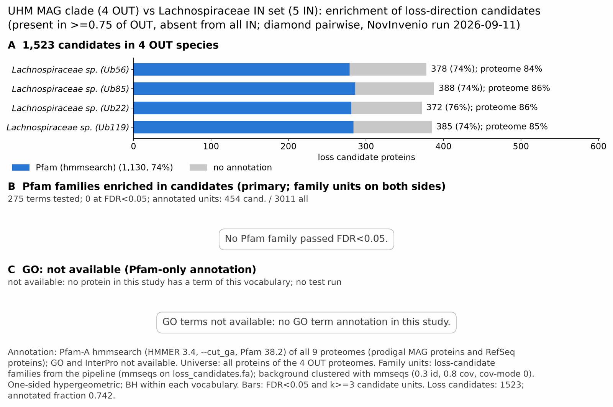

UHM lachnoNovelclade: functional enrichment (loss)
One-sided hypergeometric test per term; Benjamini-Hochberg FDR within each scope, level and vocabulary. Candidates are the loss candidates: gene families present in the OUT group and absent from the IN group. Universe: proteome. Background clustered: True (7068 sequences in 3256 clusters, mmseqs easy-cluster --min-seq-id 0.3 -c 0.8). Family level: one unit per candidate family and per background cluster.
Sources: Pfam: 2026-01-27-Pfam38.2; InterPro entries: 110.0; GO: releases/2026-07-26; analysis generated 2026-10-14T21:58:21. Source tables: studies/bacteria/UHM_lachnoNovelclade/analysis/enrichment/outputs/loss/proteome_clustered.
Full record: PROVENANCE. Run report: report.html.
- Annotation: Pfam-A HMM search (hmmsearch, Pfam gathering thresholds) for every species; no UniProt annotation. Each annotation file has a provenance sidecar (domain table, HMMER version, Pfam release); PROVENANCE.yaml lists the files and their checksums.
- GO: not available for this study (no GO annotation in any species).
- Candidate families (pipeline clustering of candidates) and background clusters (mmseqs clustering of the background proteome) are made by different runs, so family-level counts are not fully comparable.
- GO and InterPro: not available for this study. No species has GO and InterPro annotation (Ub56, Ub85, Ub22, Ub119), so no GO and InterPro test was run.
Summary figure

Annotation coverage
Fraction of proteins with at least one term per vocabulary. Universe = all proteins of the species; candidates = the candidate set.
| Species | Set | Proteins | Pfam | Pfam clan | InterPro | GO | Any |
|---|---|---|---|---|---|---|---|
| Ub56 | universe | 2116 | 84.5% | 66.5% | 0.0% | 0.0% | 84.5% |
| Ub56 | candidates | 378 | 73.8% | 49.5% | 0.0% | 0.0% | 73.8% |
| Ub85 | universe | 2051 | 85.9% | 67.4% | 0.0% | 0.0% | 85.9% |
| Ub85 | candidates | 388 | 73.7% | 47.9% | 0.0% | 0.0% | 73.7% |
| Ub22 | universe | 2249 | 86.0% | 69.4% | 0.0% | 0.0% | 86.0% |
| Ub22 | candidates | 372 | 75.5% | 52.4% | 0.0% | 0.0% | 75.5% |
| Ub119 | universe | 2175 | 84.8% | 67.2% | 0.0% | 0.0% | 84.8% |
| Ub119 | candidates | 385 | 73.8% | 50.1% | 0.0% | 0.0% | 73.8% |
| ALL_OUT | universe | 8591 | 85.3% | 67.6% | 0.0% | 0.0% | 85.3% |
| ALL_OUT | candidates | 1523 | 74.2% | 50.0% | 0.0% | 0.0% | 74.2% |
Tests summary
Per vocabulary: terms with FDR < 0.05 / terms tested. Protein level counts proteins; family level counts candidate families and background clusters.
| Scope | Level | Cand. units | Pfam sig / tested | Pfam clan sig / tested | InterPro sig / tested | GO sig / tested |
|---|---|---|---|---|---|---|
| whole_set | family | 603 | 0 / 275 | 0 / 140 | 0 / 0 (not_available_no_annotated_units) | 0 / 0 (not_available_no_annotated_units) |
| whole_set | protein | 1523 | 51 / 786 | 16 / 244 | 0 / 0 (not_available_no_annotated_units) | 0 / 0 (not_available_no_annotated_units) |
| Ub119 | family | 378 | 0 / 104 | 0 / 78 | 0 / 0 (not_available_no_annotated_units) | 0 / 0 (not_available_no_annotated_units) |
| Ub119 | protein | 385 | 0 / 125 | 0 / 85 | 0 / 0 (not_available_no_annotated_units) | 0 / 0 (not_available_no_annotated_units) |
| Ub22 | family | 365 | 0 / 130 | 0 / 90 | 0 / 0 (not_available_no_annotated_units) | 0 / 0 (not_available_no_annotated_units) |
| Ub22 | protein | 372 | 0 / 142 | 0 / 93 | 0 / 0 (not_available_no_annotated_units) | 0 / 0 (not_available_no_annotated_units) |
| Ub56 | family | 371 | 0 / 104 | 0 / 79 | 0 / 0 (not_available_no_annotated_units) | 0 / 0 (not_available_no_annotated_units) |
| Ub56 | protein | 378 | 0 / 125 | 0 / 83 | 0 / 0 (not_available_no_annotated_units) | 0 / 0 (not_available_no_annotated_units) |
| Ub85 | family | 381 | 0 / 95 | 0 / 79 | 0 / 0 (not_available_no_annotated_units) | 0 / 0 (not_available_no_annotated_units) |
| Ub85 | protein | 388 | 0 / 112 | 0 / 84 | 0 / 0 (not_available_no_annotated_units) | 0 / 0 (not_available_no_annotated_units) |
Top 25 Pfam terms (whole set, family level)
25 rows shown, ordered by FDR then p-value; 0 have FDR < 0.05 (bold).
| Term | Name | k / N cand. | n / M bg | Fold | FDR (BH) |
|---|---|---|---|---|---|
| PF12673 | SipL: SipL, SPOCS domain | 5 / 454 | 7 / 3011 | 4.737 | 0.339 |
| PF13181 | TPR_8: Tetratricopeptide repeat | 3 / 454 | 5 / 3011 | 3.979 | 1.000 |
| PF01077 | NIR_SIR: Nitrite and sulphite reductase 4Fe-4S domain | 3 / 454 | 6 / 3011 | 3.316 | 1.000 |
| PF02899 | Phage_int_SAM_1: Phage integrase, N-terminal SAM-like domain | 3 / 454 | 6 / 3011 | 3.316 | 1.000 |
| PF12800 | Fer4_4: 4Fe-4S binding domain | 3 / 454 | 6 / 3011 | 3.316 | 1.000 |
| PF12838 | Fer4_7: 4Fe-4S dicluster domain | 7 / 454 | 24 / 3011 | 1.934 | 1.000 |
| PF07715 | Plug: TonB-dependent Receptor Plug Domain | 6 / 454 | 20 / 3011 | 1.99 | 1.000 |
| PF00037 | Fer4: 4Fe-4S binding domain | 8 / 454 | 30 / 3011 | 1.769 | 1.000 |
| PF00580 | UvrD-helicase: UvrD/REP helicase N-terminal domain | 3 / 454 | 7 / 3011 | 2.842 | 1.000 |
| PF01656 | CbiA: CobQ/CobB/MinD/ParA nucleotide binding domain | 5 / 454 | 16 / 3011 | 2.073 | 1.000 |
| PF13237 | Fer4_10: 4Fe-4S dicluster domain | 6 / 454 | 21 / 3011 | 1.895 | 1.000 |
| PF00083 | Sugar_tr: Sugar (and other) transporter | 3 / 454 | 9 / 3011 | 2.211 | 1.000 |
| PF00149 | Metallophos: Calcineurin-like phosphoesterase | 3 / 454 | 9 / 3011 | 2.211 | 1.000 |
| PF00593 | TonB_dep_Rec_b-barrel: TonB dependent receptor-like, beta-barrel | 5 / 454 | 19 / 3011 | 1.745 | 1.000 |
| PF13187 | Fer4_9: 4Fe-4S dicluster domain | 5 / 454 | 19 / 3011 | 1.745 | 1.000 |
| PF00142 | Fer4_NifH: 4Fe-4S iron sulfur cluster binding proteins, NifH/frxC family | 2 / 454 | 5 / 3011 | 2.653 | 1.000 |
| PF02080 | TrkA_C: TrkA-C domain | 2 / 454 | 5 / 3011 | 2.653 | 1.000 |
| PF02254 | TrkA_N: TrkA-N domain | 2 / 454 | 5 / 3011 | 2.653 | 1.000 |
| PF02514 | CobN-Mg_chel: CobN/Magnesium Chelatase | 2 / 454 | 5 / 3011 | 2.653 | 1.000 |
| PF03460 | NIR_SIR_ferr: Nitrite/Sulfite reductase ferredoxin-like half domain | 2 / 454 | 5 / 3011 | 2.653 | 1.000 |
| PF04932 | Wzy_C: O-Antigen ligase | 2 / 454 | 5 / 3011 | 2.653 | 1.000 |
| PF07195 | FliD_C: Flagellar hook-associated protein 2 C-terminus | 2 / 454 | 5 / 3011 | 2.653 | 1.000 |
| PF13524 | Glyco_trans_1_2: Glycosyl transferase-like | 2 / 454 | 5 / 3011 | 2.653 | 1.000 |
| PF02811 | PHP: PHP domain | 3 / 454 | 10 / 3011 | 1.99 | 1.000 |
| PF13614 | AAA_31: AAA domain | 3 / 454 | 10 / 3011 | 1.99 | 1.000 |
Top 25 InterPro terms (whole set, family level)
Not available: no protein of the candidate source group has a InterPro annotation in this study (for example Pfam-only HMM annotation). No InterPro test was run.
Top 15 GO terms (whole set, family level) — secondary, computational evidence (IEA/IBA) included
Not available: no protein of the candidate source group has a GO annotation in this study (for example Pfam-only HMM annotation). No GO test was run.
Actin cytoskeleton controls
Known actin-related families and how many of their proteins pass each filter. Protein ID columns are left out.
| control | pfam_ids | desc_regex | OUT_universe | OUT_in_matrix | OUT_pass_outgroup_rule | candidates | near_miss_in1 | near_miss_in2 | n_Ub56 | n_Ub85 | n_Ub22 | n_Ub119 | n_Ub71 | n_Lsp1 | n_Lsph | n_Easp | n_Cami |
|---|---|---|---|---|---|---|---|---|---|---|---|---|---|---|---|---|---|
| Arp2/3 ARPC2 (P34-Arc) | PF04045 | 0 | 0 | 0 | 0 | 0 | 0 | 0 | 0 | 0 | 0 | 0 | 0 | 0 | 0 | 0 | |
| Arp2/3 ARPC3 (P21-Arc) | PF04062 | 0 | 0 | 0 | 0 | 0 | 0 | 0 | 0 | 0 | 0 | 0 | 0 | 0 | 0 | 0 | |
| Arp2/3 ARPC4 | PF05856 | 0 | 0 | 0 | 0 | 0 | 0 | 0 | 0 | 0 | 0 | 0 | 0 | 0 | 0 | 0 | |
| Arp2/3 ARPC5 (P16-Arc) | PF04699 | 0 | 0 | 0 | 0 | 0 | 0 | 0 | 0 | 0 | 0 | 0 | 0 | 0 | 0 | 0 | |
| Arp2/3 ARPC1 (description only) | arp2/3 complex.*(41|p41|subunit 1)|ARPC1 | 0 | 0 | 0 | 0 | 0 | 0 | 0 | 0 | 0 | 0 | 0 | 0 | 0 | 0 | 0 | |
| Arp2 / Arp3 (description only) | actin-related protein (2|3)\b|\bARP[23]\b | 0 | 0 | 0 | 0 | 0 | 0 | 0 | 0 | 0 | 0 | 0 | 0 | 0 | 0 | 0 | |
| WAVE complex NCKAP1 | PF09735 | 0 | 0 | 0 | 0 | 0 | 0 | 0 | 0 | 0 | 0 | 0 | 0 | 0 | 0 | 0 | |
| WAVE complex CYFIP (FragX_IP) | PF05994 | 0 | 0 | 0 | 0 | 0 | 0 | 0 | 0 | 0 | 0 | 0 | 0 | 0 | 0 | 0 | |
| WAVE complex ABI | PF07815|PF27594 | 0 | 0 | 0 | 0 | 0 | 0 | 0 | 0 | 0 | 0 | 0 | 0 | 0 | 0 | 0 | |
| SCAR/WAVE (SCAR_helical) | PF27569 | 0 | 0 | 0 | 0 | 0 | 0 | 0 | 0 | 0 | 0 | 0 | 0 | 0 | 0 | 0 | |
| WASP family (WH1) | PF00568 | 0 | 0 | 0 | 0 | 0 | 0 | 0 | 0 | 0 | 0 | 0 | 0 | 0 | 0 | 0 | |
| WH2 motif (WASP, WAVE, others) | PF02205 | 0 | 0 | 0 | 0 | 0 | 0 | 0 | 0 | 0 | 0 | 0 | 0 | 0 | 0 | 0 | |
| Formin FH2 | PF02181 | 0 | 0 | 0 | 0 | 0 | 0 | 0 | 0 | 0 | 0 | 0 | 0 | 0 | 0 | 0 | |
| Formin Drf_GBD / Drf_FH3 / Drf_DAD | PF06371|PF06367|PF06345 | 0 | 0 | 0 | 0 | 0 | 0 | 0 | 0 | 0 | 0 | 0 | 0 | 0 | 0 | 0 | |
| Ena/VASP (VASP_tetra) | PF08776 | 0 | 0 | 0 | 0 | 0 | 0 | 0 | 0 | 0 | 0 | 0 | 0 | 0 | 0 | 0 | |
| Coronin (description only) | coronin | 0 | 0 | 0 | 0 | 0 | 0 | 0 | 0 | 0 | 0 | 0 | 0 | 0 | 0 | 0 | |
| Cortactin (HS1_rep) | PF02218 | 0 | 0 | 0 | 0 | 0 | 0 | 0 | 0 | 0 | 0 | 0 | 0 | 0 | 0 | 0 | |
| Myosin 2 tail (Myosin_tail_1) | PF01576 | 0 | 0 | 0 | 0 | 0 | 0 | 0 | 0 | 0 | 0 | 0 | 0 | 0 | 0 | 0 | |
| Myosin head (all myosins) | PF00063 | 0 | 0 | 0 | 0 | 0 | 0 | 0 | 0 | 0 | 0 | 0 | 0 | 0 | 0 | 0 |
Page written by bin/generate_enrichment_page.py.